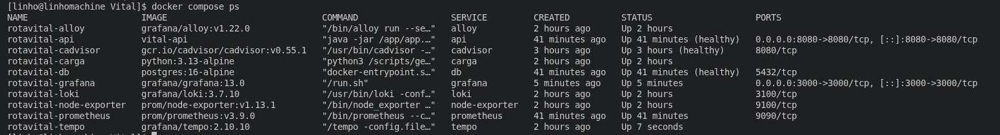
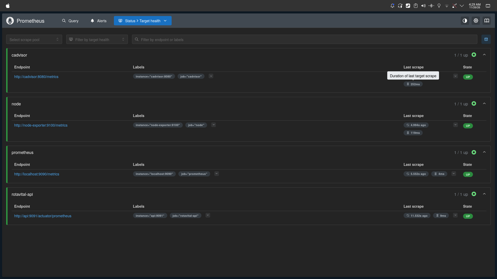
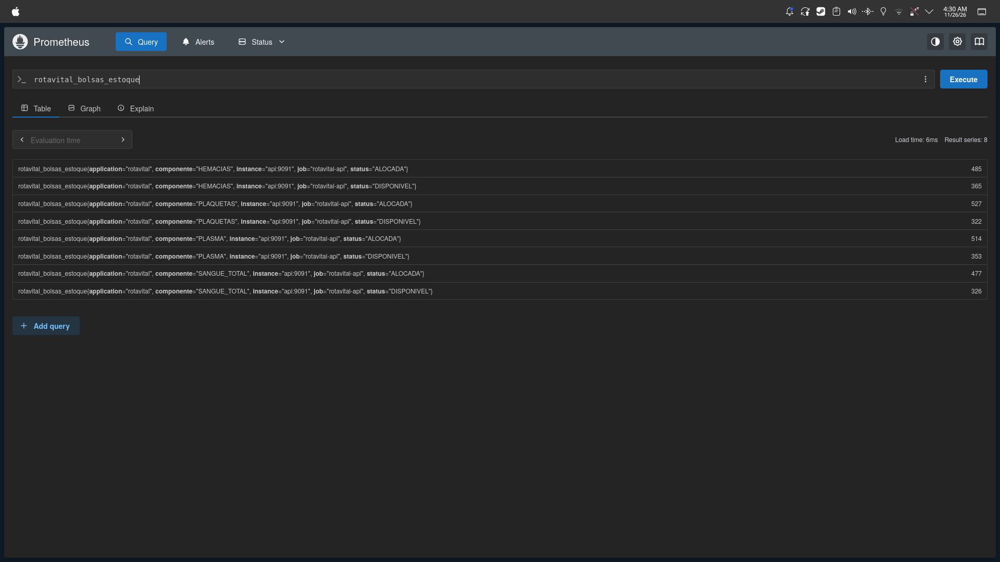
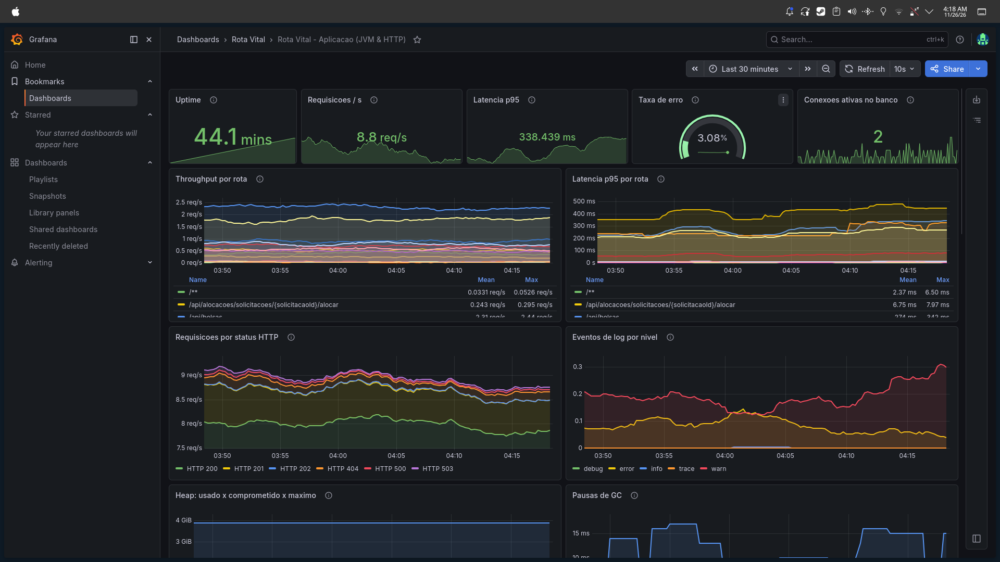
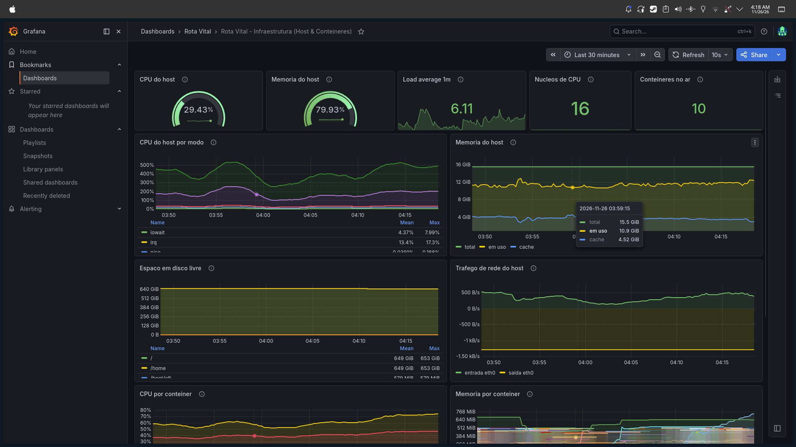
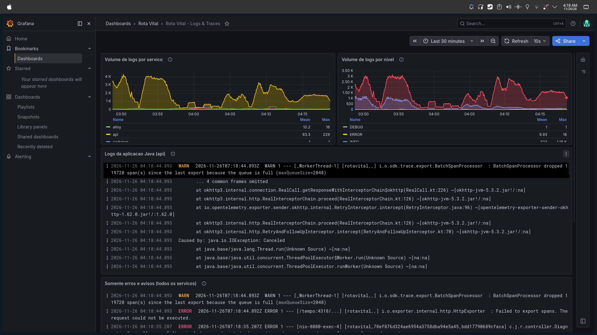
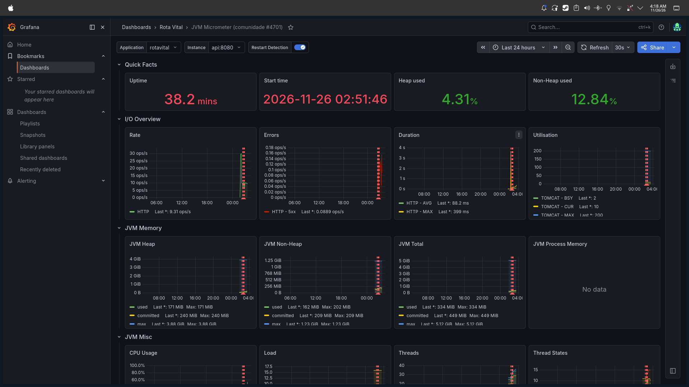
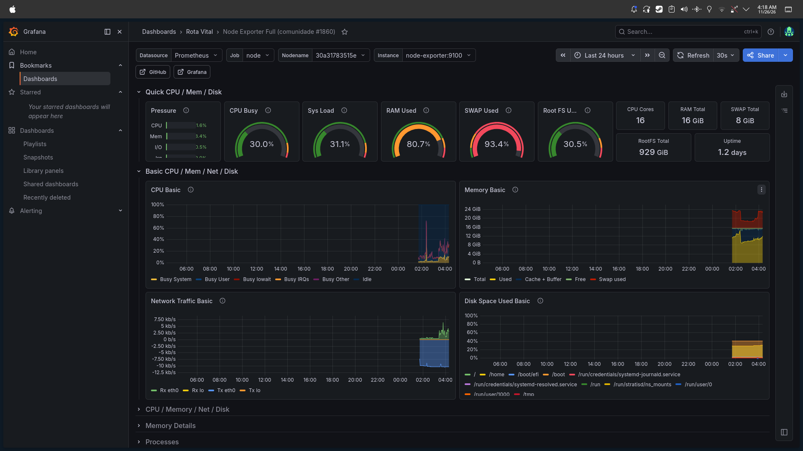
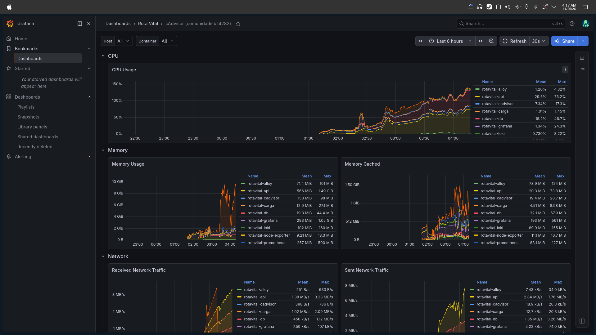

| Allan Max de Jesus Rodrigues de Lima | amjrl@cesar.school |
| Boniek Araujo dos Santos Junior | basj@cesar.school |
| Caio Cesar Leandro Amorim | ccla@cesar.school |
| Luan Ventura Ferreira de Moura | lvfm2@cesar.school |
| Miguel Victor Lussac Barboza | mvlb@cesar.school |
| Pedro Augusto Carvalho Araujo | paca@cesar.school |
| Vinicius Pessoa de Albuquerque | vpa@cesar.school |
| Wesley Yuri da Silva | wys@cesar.school |
Repositório: https://github.com/JackkOps/Vital
Branch: feat/observability
Grafana (acesso remoto): https://linhomachine.tail9034e2.ts.net
Recife, novembro de 2026
O Rota Vital é um sistema de gestão de hemocomponentes: controla o estoque de bolsas de sangue, recebe solicitações de hospitais, aloca bolsas compatíveis e calcula a rota de entrega entre unidades da rede usando o algoritmo de Dijkstra.
A aplicação é uma API REST em Spring Boot 4.1.1 (Java 21) com PostgreSQL 16, migrações versionadas em Flyway e 184 testes automatizados. A instrumentação cobre os três sinais da observabilidade, cada um com sua ferramenta e seu modo de transporte.
| Sinal | Responde a pergunta | Ferramenta | Transporte |
|---|---|---|---|
| Métricas | Quanto? Com que frequência? Está piorando? | Prometheus | pull (scrape a cada 15s) |
| Logs | O que exatamente aconteceu neste evento? | Loki + Alloy | push |
| Traces | Onde foi gasto o tempo desta requisição? | Tempo | push (OTLP) |
O que foi instrumentado na aplicação:
health,
info, metrics e prometheus;traceId e
spanId, e o Grafana transforma esse id em link direto para o trace.
┌──────────────────────────────┐
│ GRAFANA :3000 │
│ (único serviço publicado) │
└───┬──────────┬───────────┬───┘
consulta │ │ │
┌─────────────────┘ │ └────────────────┐
v v v
┌────────────────┐ ┌────────────────┐ ┌────────────────┐
│ PROMETHEUS │ │ LOKI │ │ TEMPO │
│ métricas │ │ logs │ │ traces │
│ :9090 (pull) │ │ :3100 (push) │ │ :4318 (push) │
└──┬────┬────┬───┘ └───────▲────────┘ └───────▲────────┘
│ │ │ │ │
scrape │ │ scrape push│ push│
│ │ │ │ │
v │ v ┌─────┴──────┐ │
┌────────┐│┌──────────────┐ │ ALLOY │ │
│ NODE │││ cADVISOR │ │ (coletor) │ │
│EXPORTER│││ │ └─────▲──────┘ │
│ :9100 │││ :8080 │ │ lê o stdout │
│ CPU/RAM│││ por contêiner│ │ dos 10 contêineres │
│ disco │││ │ │ │
└────────┘│└──────────────┘ ┌──────┴───────────────────────────┴────┐
│ │ API (Spring Boot) │
└───────────────────>│ :8080 API de negócio (publicada) │
/actuator/prometheus │ :9091 Actuator (NÃO publicada)│
└───────────────┬───────────────────────┘
│ JDBC
┌─────────┴─────────┐
│ POSTGRESQL :5432 │
│ (NÃO publicada) │
└───────────────────┘
| Serviço | Imagem | Porta | Publicada? | Função |
|---|---|---|---|---|
| api | vital-api (própria) | 8080 | sim | API REST de negócio |
| api (Actuator) | — | 9091 | não | /actuator/*, raspado internamente |
| db | postgres:16-alpine | 5432 | não | banco de dados |
| grafana | grafana/grafana:13.0 | 3000 | sim | visualização |
| prometheus | prom/prometheus:v3.9.0 | 9090 | não | métricas |
| loki | grafana/loki:3.7.10 | 3100 | não | logs |
| alloy | grafana/alloy:v1.22.0 | — | não | coleta de logs |
| tempo | grafana/tempo:2.10.10 | 3200/4318 | não | traces |
| node-exporter | prom/node-exporter:v1.13.1 | 9100 | não | métricas do host |
| cadvisor | cadvisor:v0.55.1 | 8080 | não | métricas por contêiner |
| carga | python:3.13-alpine | — | — | gerador de tráfego |
Todas as imagens têm versão fixada, nunca latest:
uma stack de observabilidade que muda sozinha a cada pull deixa de ser
uma referência confiável.
Criadas com Micrometer e instrumentadas por anotação
(@Timed, @Counted, @Observed processadas por
aspectos AOP). A decisão foi arquitetural: injetar MeterRegistry nos
services exigiria alterar seus construtores, e os testes os instanciam diretamente —
a suíte quebraria por um motivo alheio à regra de negócio.
| Métrica | Tipo | O que mede | Tags |
|---|---|---|---|
rotavital_bolsas_estoque | Gauge | bolsas em estoque no instante da coleta | status, componente |
rotavital_solicitacoes_quantidade | Gauge | solicitações por situação e urgência | status, urgencia |
rotavital_bolsas_alocadas_total | Counter | alocações acumuladas desde a subida | tipo_sanguineo |
rotavital_rotas_calculo_seconds | Timer | tempo do cálculo de rota (Dijkstra) | histograma habilitado |
rotavital_estoque_listagem_seconds | Timer | tempo de listar o estoque | — |
rotavital_solicitacoes_listagem_seconds | Timer | tempo de listar solicitações | — |
Os gauges são alimentados por um MultiGauge atualizado a cada 15
segundos, que executa agregações GROUP BY diretamente no banco em vez de
carregar entidades em memória — o custo da observabilidade não pode competir com o
da aplicação.

docker compose ps: os 10 contêineres no ar.
Note que apenas api (8080) e grafana (3000) têm porta
publicada (0.0.0.0:); os demais expõem portas apenas na rede interna.
api:9091/actuator/prometheus — a porta de
gerenciamento, inacessível de fora.
rotavital_bolsas_estoque retornando
8 séries, uma por combinação de componente e status, com a tag
application="rotavital" aplicada globalmente.
@ConditionalOnProperty.

traceId e
spanId, que o Grafana converte em link para o trace no Tempo.


| Item | Valor |
|---|---|
| URL | https://linhomachine.tail9034e2.ts.net |
| Usuário de leitura | professor (papel Viewer) |
| Senha | informada à parte, junto com a entrega |
| Mecanismo | Tailscale Funnel (HTTPS, certificado Let's Encrypt) |
| Requisito do avaliador | nenhum — não é preciso instalar Tailscale |
O Funnel publica apenas a porta 3000 num endereço HTTPS público.
Verificou-se que o DNS público resolve o nome para endereços públicos
(209.177.145.97 e .192) e que o acesso forçado por esses
endereços — ignorando o DNS local da máquina — responde HTTP 200. Logo,
o caminho não passa pela rede privada do Tailscale, e qualquer navegador acessa.
| Requisito | Como foi atendido |
|---|---|
/actuator não exposto | management.server.port=9091 — porta de gerenciamento separada e não publicada |
Nunca expor env/loggers | lista de endpoints restrita a health, info, metrics, prometheus |
| Senha padrão do Grafana proibida | senha vem do .env; o compose usa ${VAR:?} e aborta o up se ela faltar |
.env não versionado | apenas .env.example está no repositório |
| Menor privilégio | avaliador recebe papel Viewer; autocadastro desativado |
| Superfície mínima | Prometheus, Loki, Tempo e PostgreSQL sem porta publicada |
| Requisição pela URL pública | Resultado | Interpretação |
|---|---|---|
/api/health | 200 | Grafana no ar |
/api/search sem credenciais | 401 | exige autenticação |
/api/search com usuário Viewer | 200 | avaliador vê os 6 dashboards |
/actuator/prometheus | 302 | rota inexistente no Grafana |
/api/v1/query (API do Prometheus) | 401 | inalcançável |
| portas 9090, 3100, 3200, 8080, 9091, 5432 | sem resposta | o Funnel publica só a 3000 |
/metrics — o endpoint de métricas do próprio Grafana —
respondia 200 sem autenticação, expondo 4.432 séries,
entre elas grafana_build_info com a versão exata do servidor: o
primeiro dado que um atacante usa para cruzar com vulnerabilidades conhecidas.
Corrigido com GF_METRICS_ENABLED=false e revalidado.
Ao inspecionar um trace de GET /api/bolsas, a árvore de spans mostrou
526 consultas ao banco numa única requisição:
http get /api/bolsas 60,06 ms
connection 59,47 ms
listar-estoque-de-bolsas 57,82 ms
query 1,12 ms <- a consulta principal
query 0,13 ms <- e mais 525 consultas
(... x526 no total)
É o clássico problema N+1: o método carrega as bolsas e, ao montar cada resposta, acessa um relacionamento lazy, disparando uma consulta por registro. O custo cresce linearmente com o estoque.
A lição é o argumento mais forte a favor de observabilidade que encontramos no projeto: nenhuma métrica teria revelado isso. O painel de latência mostraria "p95 de 60 ms" e ninguém perguntaria mais nada. Só a árvore de spans mostra onde o tempo foi gasto. É a diferença entre saber que está lento e saber por quê.
Com amostragem em 100%, aquele N+1 gerava mais de 4.000 spans por segundo. O
exportador não deu conta e passou a registrar
dropped 119720 span(s) ... queue is full — ou seja, o painel de logs
exibia com destaque os erros do próprio sistema de observabilidade.
Corrigido reduzindo a amostragem para 10% e ampliando a fila. Amostrar é a prática normal em produção justamente por isso: traces são caros e repetitivos, e uma amostra representativa responde às mesmas perguntas por um décimo do custo.
| Sintoma | Causa real | Solução |
|---|---|---|
permission denied ao montar arquivos de configuração | SELinux em modo enforcing — chmod não resolve | sufixo :z nos volumes |
| Alloy sem acesso ao socket do Docker, mesmo como root | rótulo SELinux do contêiner | security_opt: [label:disable], preferido a privileged |
| Grafana rejeitando a senha nova | GF_SECURITY_ADMIN_PASSWORD só vale no primeiro boot; depois a senha vive no volume | remover o volume (tudo é provisionado) e subir de novo |
jdbc.includes=connection,query ignorado | os valores são o enum em MAIÚSCULAS; em minúsculas falha em silêncio | CONNECTION,QUERY |
| Métricas de negócio ausentes | banco vazio: agregação GROUP BY sem linhas não publica série | gerador de carga passou a escrever, não só ler |
| "O avaliador não vê dashboard nenhum" | a Home padrão do Grafana lista só favoritos e recentes — vazios para usuário novo | definir um home dashboard padrão |
A última merece destaque porque o diagnóstico errado era tentador. Parecia falta de permissão, mas a API consultada com as credenciais do próprio Viewer devolvia 200 com os 6 dashboards — e não 403. Consultar a API com as credenciais do usuário afetado separa, em um único comando, um problema de permissão de um problema de apresentação.
ports: não é firewall. Ele apenas cria o
encaminhamento do host para o contêiner. Qualquer serviço na mesma rede Docker
alcança qualquer porta que esteja escutando, publicada ou não. A prova está nesta
entrega: fechamos a porta do Actuator para o mundo e o Prometheus continuou raspando
normalmente, porque ele nunca precisou da porta publicada.
Cardinalidade é o custo escondido. O traceId é enviado
ao Loki como metadado estruturado, e não como rótulo: cada requisição tem um id único,
e usá-lo como rótulo criaria uma série nova por requisição. A mesma disciplina vale
para métricas — rótulo é para valor que se repete.